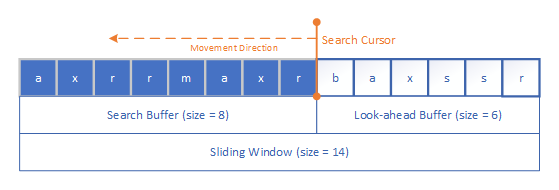
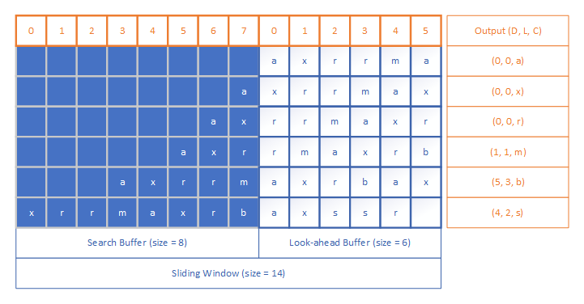
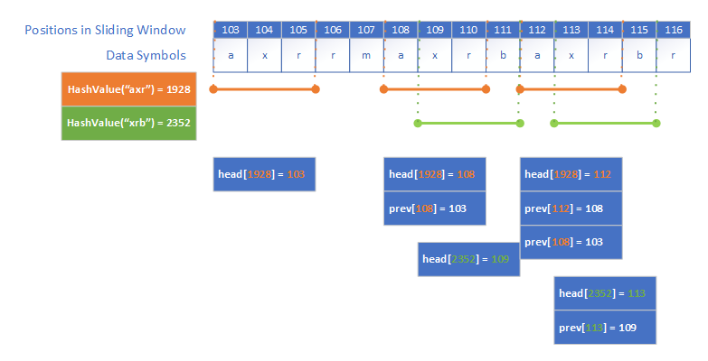
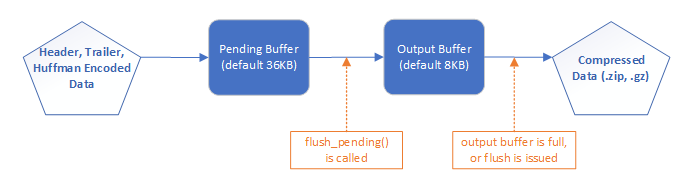

1. Introduction
1.1. What is zlib
zlib is a free, open source software library for
To date, zlib is mainly maintained by Mark Adler, and its recent updates and version releases can all be found on GitHub. Mark Adler is also active on Stack Overflow to answer technical questions about zlib and gzip.
More than many software applications and libraries utilizes zlib. If paying attention, you can find zlib almost everywhere, in operation systems, internet services, streaming services, document editors, and more. This is an incomplete list of those applications.
The specification of zlib achieved official Internet RFC (Request for Comments) status in May 1996.
2. Compression Algorithm
The
In this document, I will focus on the compression part of zlib, as well as zlib’s implementation of the
I will use the words
2.1. Deflate
2.2. LZ77
LZ77 is a dictionary based lossless compression algorithm. It is also known as LZ1.
The basic idea of dictionary based algorithms is to replace an occurrence of a particular sequence of bytes in data with a reference to a previous occurrence of that sequence.
There are two main types of dictionary based compression algorithms: LZ77 and LZ78. These two algorithms are named after the two creators Jakob Ziv and Abraham Lempel. LZ77 (Lempel-Ziv77) and LZ78 (Lempel-Ziv78) were published in papers in 1977 and 1978, respectively.
LZ77 compression algorithm works by using a
2.2.1. Sliding Window
The sliding window is used to examine the input data sequence, and to maintain the historical data that serve as the dictionary. In other words, the dictionary is a portion of the previously appeared and encoded data.
The sliding window consists of two parts: a

The
In practice, typically the size of the sliding window can be from several KB to MB, such as 4 KB, 32 KB, 1 MB, or 4 MB.
2.2.2. Length-Distance pair
The length-distance pair indicates that each of the next
In LZ77 algorithm, the compressor searches back through the search buffer until it finds a match to the first character in the look-ahead buffer. There could be more than one matches exist in the search buffer, and the compressor will find the one match having the longest length. When the
- D = distance of the search cursor from the start of look-ahead buffer
- L = length of longest match
- C = next character in look-ahead buffer beyond longest match
The reason of adding the third element C in the triple is for handling the case where no match is found in the search buffer. In that case, the values of both D and L are 0, and C is the first character in current look-ahead buffer.
The following figure shows an example of how LZ77 finds a longest match and encodes the repeated characters for a given string “axrrmaxrbaxssr”.

In practice, a compressor can optimize the encoding output according to its own implementation, and choose output formats other than the
2.3. Huffman Encoding
Huffman encoding is a statistical compression method. It encodes data symbols (such as characters) with variable-length codes, and lengths of the codes are based on the frequencies of corresponding symbols.
Huffman encoding, as well as other variable-length coding methods, has two properties:
- Codes for
more frequently occurring data symbols areshorter than codes for less frequently occurring data symbols. - Each code can be
uniquely decoded . This requires the codes to beprefix codes , meaning any code for one symbol is not a prefix of codes for other symbols. For example, if code“0”is used for symbol“A”, then code“01”cannot be used for symbol“B”as code“0”is a prefix of code“01”. The prefix property guarantees when decoding there is no ambiguity in determining where the symbol boundaries are.
Huffman encoding has two steps:
- Build a Huffman tree from original data symbols. A Huffman tree is a binary tree structure.
- Traverse the Huffman Tree and assign codes to data symbols.
Huffman codes can be
Fixed Huffman codes can be created by examining a large number of data sets, and finding typical code lengths. When using fixed Huffman coding, the same codes are used for all the input data symbols.
Dynamic Huffman codes are generated by breaking input data into blocks, and generating codes for each data block.
3. Implementation of zlib
The implementation of zlib is pragmatic and efficient. Over the past 20 years, people have made many attempts to improve the performance of compression applications, but it seems that we only achieve better performance by using algorithms other than deflate (and inflate), adopting parallel processing, or improving CPU level instructions. So zlib, as it states in its GitHub repository, is quite
In the following sections, we will look at some of the detailed techniques that zlib uses to implement the deflate compression algorithm.
3.1. Compression Levels
zlib has 10 compression levels (0-9). Different levels have different compression performance in terms of
Under the hood, compression level changes the deflate strategy and parameters in the deflate process. More details will be discussed in the following sections.
3.2. Sliding Window
In zlib, the default size of sliding window is 64KB. The sliding window is divided into two parts, corresponding to the
The following code snippet shows how the sliding window is initialized. The macro MAX_WBITS determines the size of the sliding window. It’s configurable and the default value is 15, which leads to a 32KB search buffer and a 64KB sliding window.
1define MAX_WBITS 15 /* 32K LZ77 window */
2
3s->w_bits = windowBits;
4s->w_size = 1 << s->w_bits;
5s->w_mask = s->w_size - 1;
6
7s->window = (Bytef *) ZALLOC(strm, s->w_size, 2*sizeof(Byte));Data are copied into sliding window when look-ahead buffer becomes insufficient. This process is implemented inside function fill_window.
1local void fill_window(s)
2 deflate_state *s;
3{
4 ...
5}3.3. Finding Longest Match
The technique zlib uses to find the longest match in the search buffer is straightforward, and it turns out to be the fastest for most input files: use a string matching algorithm to find possible matches, then try all possible matches and select the longest.
The matching algorithm for small strings is inspired from
So in summary, the process of finding the longest match has two major parts:
- In the sliding window, for each data symbol in the look-ahead buffer, use a Rabin-Karp algorithm based method to find
a possible match in the search buffer, and record the match start position. There can be multiple possible matches available. - For each possible match, starting from the match start position, check each following data symbol to find the
current longest match . Search in all the possible matches found in step 1, until findingthe longest match , or finding a match whose length exceeds the pre-definedlongest match limit .
3.3.1. Match Length Limit
zlib defines a MIN_MATCH and a MAX_MATCH as the
1#define MIN_MATCH 3
2#define MAX_MATCH 258The MIN_MATCH is set to 3. The reason of having a minimum match length equals to 3 is obvious: the matches shorter than 3 will not help reduce the encoded data size, because the encoded data symbols will have the same or longer length.
This value of MIN_MATCH cannot be changed unless you change related code, such as calling UPDATE_HASH function for how many times.
The MAX_MATCH is set to 258. This number comes from the fact that one length-distance pair, which is the output of the LZ77 encoded data symbols, can represent at most 258 bytes. A length requires at least one bit and a distance requires at least one bit, so two bits in can give 258 bytes out.
The value of MAX_MATCH in zlib can be changed, but the change might affect compression performance. Also in zlib there is some logic controlled by condition MAX_MATCH == 258. Those codes, when enabled, could improve compression performance when using a modern compiler.
1#if (defined(UNALIGNED_OK) && MAX_MATCH == 258)
2 /* This code assumes sizeof(unsigned short) == 2. Do not use
3 * UNALIGNED_OK if your compiler uses a different size.
4 */
5 if (*(ushf*)(match+best_len-1) != scan_end ||
6 *(ushf*)match != scan_start) continue;
7 ...3.3.2. Rabin-Karp Algorithm
Rabin-Karp algorithm is a string-searching algorithm created by Richard M. Karp and Michael O. Rabin. It uses hashing to find any one of a set of pattern strings in a text. For example, given a text “AABAACAADAABAABA”, and a pattern “AABA”, we can use Rabin-Karp algorithm to find pattern exists in the text at index 0, 9, 12.
Following pseudo code describes how Rabin-Karp algorithm works.
1# p is a pattern, its length is m
2# t is text, its length is n
3# the algorithm searches for pattern p in text t
4
5Compute hash_p (for pattern p)
6Compute hash_t (for the first substring of t with m length)
7for i = 0 to n - m:
8 if hash_p == hash_t:
9 Match t[i . . . i+m-1] with p, if matched return 1
10 else:
11 Update hash_t for t[i+1 . . . i+m] using rolling hash
12EndThe text = “AAAAAAA” and pattern = “AAA”.
The key to the Rabin-Karp algorithm’s performance is the efficient computation of hash values of the successive substrings of the text, by using the
3.3.3. Hash Chain
As explained earlier, Rabin-Karp algorithm checks the hash value of substrings in order to find matches in text. To find matches in the search buffer which stores recent data symbols, zlib uses a MIN_MATCH) bytes.
This hash chain in zlib is implemented by using two arrays: prev[] and head[]. Both arrays stores the positions in the sliding window. The head[] array stores the heads of the hash chains, the prev[] array stores and links the positions of strings with the same hash index. The following figure shows an example of how the hash chain works.

In this example, the HashValue function and its results are just examples, and they are not accurate.
The size of prev[] is limited to half of the sliding window. Because the link that prev[] maintains is only for the data in the search buffer, and that’s only last 32K strings by default. An index in prev[] array is a window index modulo 32K.
Following code snippets show how zlib implements the hash chain organization. The hash size changes with parameter memLevel, which is configured for each compression level.
1s->hash_bits = (uInt)memLevel + 7;
2s->hash_size = 1 << s->hash_bits;
3
4s->prev = (Posf *) ZALLOC(strm, s->w_size, sizeof(Pos));
5s->head = (Posf *) ZALLOC(strm, s->hash_size, sizeof(Pos));
6
7#define UPDATE_HASH(s,h,c) (h = (((h)<<s->hash_shift) ^ (c)) & s->hash_mask)
8
9#define INSERT_STRING(s, str, match_head) \
10 (UPDATE_HASH(s, s->ins_h, s->window[(str) + (MIN_MATCH-1)]), \
11 match_head = s->prev[(str) & s->w_mask] = s->head[s->ins_h], \
12 s->head[s->ins_h] = (Pos)(str))
13#endif
14
15#define CLEAR_HASH(s) \
16 s->head[s->hash_size-1] = NIL; \
17 zmemzero((Bytef *)s->head, (unsigned)(s->hash_size-1)*sizeof(*s->head));In CLEAR_HASH, arrayhead[] is cleared. Array prev[] is cleared on the fly, not here.
3.3.4. Adaptive Search Limit
When searching for the longest match in the hash chain, zlib limits the
- The predefined
max_chain_lengthvalue. This value is different for different compression levels. - In the searching process, if a match has been found and its length is not less than a predefined
good_matchlength, the search length will be shortened asnew_search_chain_length = search_chain_length / 4
The search limit values are defined in a
1local const config configuration_table[10] = {
2/* good lazy nice max_chain_length */
3/* 0 */ {0, 0, 0, 0, deflate_stored}, /* store only */
4/* 1 */ {4, 4, 8, 4, deflate_fast}, /* max speed, no lazy matches */
5/* 2 */ {4, 5, 16, 8, deflate_fast},
6/* 3 */ {4, 6, 32, 32, deflate_fast},
7/* 4 */ {4, 4, 16, 16, deflate_slow}, /* lazy matches */
8/* 5 */ {8, 16, 32, 32, deflate_slow},
9/* 6 */ {8, 16, 128, 128, deflate_slow},
10/* 7 */ {8, 32, 128, 256, deflate_slow},
11/* 8 */ {32, 128, 258, 1024, deflate_slow},
12/* 9 */ {32, 258, 258, 4096, deflate_slow}}; /* max compression */In above code snippet:
0-9are compression levels.good,lazy,niceare the values of the length of a good match, a lazy match and a nice match.max_chain_lengthis the max chain length zlib searches.
3.4. Huffman Encoding
zib implements both
The whole data stream can contain a mix of static and dynamic Huffman encoded data. The Huffman codes are transmitted in the deflate stream header for each block.
In summary, the Huffman encoding process in zlib consists of the following steps:
- During LZ77 encoding process, collect
statistics of data bytes and generate a histogram. - For each data block, build a
dynamic Huffman tree using the collected statistics. - Compute and compare the encoded block lengths using a dynamic Huffman tree and a static Huffman tree, and decide whether it is worthwhile to use
a dynamic or a static tree for the encoding phase. - Perform dynamic or static Huffman encoding on the block of data.
3.5. I/O Buffer
One important notion in the deflate compression is
3.5.1. Input Buffer
Before starting compression, zlib
The reason of having the input buffer is that zlib won’t generate any output data until 16K data symbols have been generated in the
The default input buffer size can be changed using gzbuffer function.
1gzbuffer(file, size)
2{
3 ...
4 state->want = size;
5 ...
6}3.5.2. Literal Buffer
The
Once the
Default literal buffer size is configured by marco DEF_MEM_LEVEL. In zlib’s code, DEF_MEM_LEVEL = 8, and it’s the same for all compression levels. So all compression levels have the same 16K literal buffer size.
3.5.3. Output Buffer
For outputting the compressed data, zlib uses two buffers: a

Upon initialization, zlib creates a pending buffer (default size is 36K), and an output buffer (default size is 8K). The output data are first
Data are copied from pending buffer to output buffer in function flush_pending. This function is called when the literal buffer is full, which means a block of data has been processed. It’s also called in some other cases when flushing a block is needed. The length of data copied to the output buffer is limited by the available space in output buffer.
When the
zlib uses counters pending_out and avail_out to record how many bytes are available in pending buffer and output buffer. Counter value 0 means the buffer is full.
Related code snippets:
1flush_pending() {
2 len = s->pending;
3 if (len > strm->avail_out) len = strm->avail_out;
4 if (len == 0) return;
5
6 zmemcpy(strm->next_out, s->pending_out, len);
7} 1gzcomp() {
2 if (strm->avail_out == 0 || (flush != Z_NO_FLUSH &&
3 (flush != Z_FINISH || ret == Z_STREAM_END))) {
4 have = (unsigned)(strm->next_out - state->x.next);
5 if (have && ((got = write(state->fd, state->x.next, have)) < 0 || (unsigned)got != have)) {
6 gz_error(state, Z_ERRNO, zstrerror());
7 return -1;
8 }
9 if (strm->avail_out == 0) {
10 strm->avail_out = state->size;
11 strm->next_out = state->out;
12 }
13 }
14}3.6. Misc.
This section is empty and waiting for my future updates.
4. Optimizing zlib
More than a few companies have been interested in improving compression performance by optimizing the implementation of zlib. Following is a summary of some of the
4.1. Intel: zlib-new
Reference: Intel: High Performance ZLIB compression on Intel Architecture Processors (pdf)
Optimizations focus on improved hashing, the search for the longest prefix match of substrings in LZ77 process, and the Huffman code flow.
- DEFLATE_quick: Limit hash chain search to the first entry.
- DEFLATE_medium: Designed to strike a balance between the compression ratio of zlib’s
DEFLATE_slow strategy, and the performance of zlib’sDEFLATE_fast strategy. It skips forwarding by the match length after a match is found and supports a variant of lazy match evaluation. When a match is found at positionpand of lengthl, checks for a match at positionp + l + 1. If a new match is found, scans backwards from positionp + l + 1, to determine whether the second match can be improved.
4.2. IBM: fast deflate
Reference: IBM: A fast implementation of Deflate
Optimizations focus on improving the speed of zlib deflate process by using LZ4’s repetition elimination process, and improved Huffman coding process.
4.3. Facebook: Zstandard
Reference: Facebook Zstandard (zstd) design introduction
Zstandard is designed to scale with modern hardware and compress smaller and faster, for general-purpose compression for a variety of data types.
Improve upon zlib by combining several recent innovations and targeting modern hardware.
In compression, use
Use
Use a
In decompression, separate data into multiple parallel streams and uses a new generation Huffman decoder to
4.4. Google: Zopfli, Brotli
Reference: Data compression using Zopfli (pdf), Comparison of Brotli, Deflate, Zopfli, LZMA, LZHAM and Bzip2 Compression Algorithms (pdf)
In 2013 Google launched
The Brotli compression format is defined in RFC 7932. The algorithm uses a combination of a modern variant of the LZ77 algorithm, Huffman coding and 2nd order context modeling. It also uses a static dictionary containing more than 13K words. The static dictionary is helpful for compressing short files.
4.5. Apple: LZFSE
Reference: Apple Data Compression: LZFSE
LZFSE is designed for iOS and macOS, to achieve much higher energy efficiency and speed (between 2x and 3x).
LZFSE algorithm uses
4.6. CloudFlare: zlib
Reference: CloudFlare fights cancer: The Unexpected Benefit Of Open Sourcing Our Code
CloudFlare zlib fork on GitHub
CloudFlare’s improvements on zlib include:
- Use
uint64_t to replace the 16-bit types. - Use an
improved hash function iSCSI CRC32. This function is implemented as a hardware instruction on Intel processors. It has very fast performance and better collision properties. - Search for matches of at least
4 bytes . - Use SIMD instructions for
window rolling . - Use Intel’s hardware carry-less multiplication instruction PCLMULQDQ for the
CRC32 checksum . Optimized longest-match function . This is the most performance demanding function in the library.
Other experiments, not yet included in the released zlib fork:
- Use an improved version of the linked list used in zlib (hash chain)
Benchmarking results
- Testing datasets are four standard corpus data consists of ASCII text, bitmap images, numbers, and source code files.
- Speed: In general, CloudFlare’s zlib is faster than zlib and Intel’s zlib on levels 2 to 9, especially 6 to 9 (2x - 7.5x).
- Compression ratio: Very similar to zlib on all levels, and better than Intel’s zlib on level 1.
4.7. CloudFlare: preset dictionary
Reference: CloudFlare: improve compression with preset deflate dictionary
Optimizations aim to improve compression performance (~25% down) for HTML files (mostly
Change minimal match length to
Use a
- Create the preset dictionary by performing pseudo LZ77 over a set of files to be compressed, and find strings that DEFLATE would not compress in the first 16Kb of each input file. Then performs a frequency count of the individual strings, and scores them according to their length and frequency. The highest scoring strings are saved into the dictionary file.
- Use a Go program to make such deflate dictionary: dictator on GitHub
Reference
About
This document is written by Euccas Chen. Initial version is published on January 5th, 2019.
The web pages are generated by Hugo - an open source static site generator, and themed with Kraiklyn.
The web page style and logo design is inspired by GitBook.